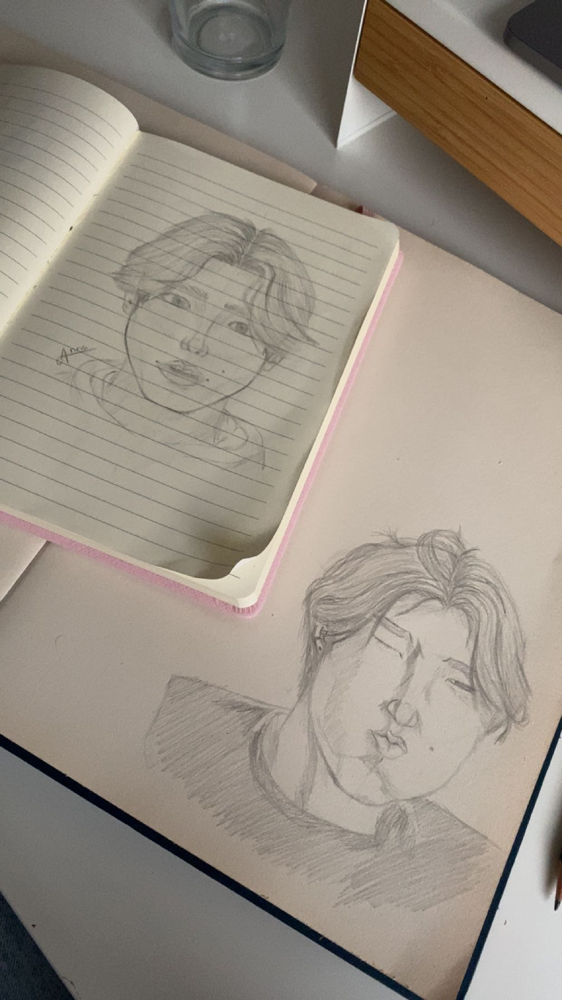

Home
Welkom op mijn portofolio website. Mijn naam is Anna Tolhuis. Op deze site kan je werk vinden van ik allemaal heb gemaakt de afgelopen jaren.
Projecten
Hier kan je al mijn voorgaande projecten vinden die ik de afgelopen jaren heb gedaan.
Stages
Hier kan je al mijn voorgaande stages vinden die ik heb afgerond.
Ander werk
Hier kan je al mijn werk vinden dat niet gerelateerd is aan projecten, zoals: schetsen, schilderijen en aardewerken.
Over mij
Als je meer wilt weten over wie ik ben kan je daar hier meer over lezen.